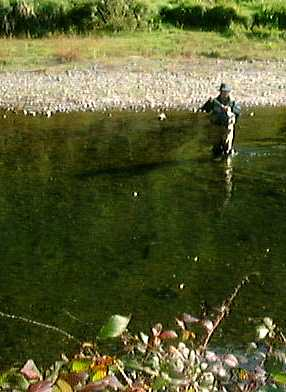
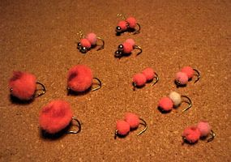

釣行日誌 ＮＺ編
２月～５月 秋が深まりゆくワイカト
2002/02/03 (SUN)
あっという間に１月が終わり、２月となった。
多忙な日曜の合間を縫って、山麓の川Ｂへ行く。
風を見つめ、光を聴き、鱒を釣った。
神道も、仏教も、イスラム教も、ヒンズー教も、キリスト教も信じないが、確かに、神の存在を実感した一日。
星が降った。
2002/04/09 (TUE)
朝から山麓の川Ｃへ行く。ロッドをセットして釣り始めたものの、このところの雨の少なさが原因でヒドイ渇水状態。手前の深みからちょろっと小さなレインボーが顔を出すが、釣れる気配が無い。
さっさとあきらめて、山麓の川Ｂへ移動。
山麓の川Ｂでは、牧場のミルク絞り小屋から農道を降り、長トロの淵まで行き、そこから釣り始める。エライいいコンディションだと思うがさっぱりでない。ここも渇水の影響か？
どのポイントでもでないまま、大本命の左曲がりの淵まで来る。上から覗くと、40cm級が悠々と水面に出て流下物をあさっている。
弁当を食べて気を落ち着ける。
しっかりとティペットにライトケイヒルを結び、鱒の位置をよく見てからキャスト。ちょっと下過ぎる。再度キャスト。今度は遠すぎた。ティペットが鱒を脅かし、パシャッという水はねと共に鱒が姿を消す。
横這いのままの姿勢で、待つこと５分間。長い５分間の沈黙の後、最初の位置の数メートル下流でライズが始まる。警戒しているのか、規則正しい間隔ではなく、散発的なライズである。
ちょっと遠くなったので、ひっそりと立ち上がり、慎重にキャスト。まだ届かない。ラインを繰り出し、再度のキャスト。まだ足りない。向かい風で押し戻されているようだ。三度のキャスト。はらりとフライが落ち、少し流れ、鱒の鼻が水面に出てくわえる。
ピシッ！
！！
合わせ切れ。無念の火曜の昼下がり。
2002/04/08 (MON)
土曜・日曜と雨が降ったので、増水を見込んで牧場の川へ行く。のんびりと11時に釣り場に着いたら早くも先行者が。釣具店のマイクかも知れない。（笑）
ニュージーランドでは、平日に他の釣り人に会うのはめったにないことなので、いささか驚く。小さな川なので、彼の後を追うのはやめて、少し下流から入ることにする。
小さな川の小さな淵を釣り始める。藪の切れ目が心地よい深みになっているポイントに茶色のドライフライを流すと、パックリと鼻先が浮かんで毛針をくわえた。ドシン、ギュワン、ドッパンというジャンプでファイトが始まり、右往左往する黄金色の魚体が美しい。ネットに収まったブラウントラウトが、張りのある魚体を誇らしげに奮わせていた。
小さな淵の尻で、ライズが見えた。規則正しく鼻先が水面を割っている。レッドハンピーを投げると、パックリとライズ。いただき。対岸の藪に潜り込もうとするブラウンのファイトをこらえつつ寄せてくると40cm級のブラウン。もごりもごりというファイトが嬉しい１尾。
その淵で、どうも今の１尾は、最良の位置から出てきたのではないことに気づき、じっと様子を伺うと、別のライズが。大きな鼻先である。レッドハンピーをそのまま流すと見切られたようで、黄金色が水面下で反転するのが見える。茶色の12番ライトケイヒルを結び、流れの筋にフライを乗せると、
ぱっくん
とフライにのしかかった影が見えた。ふたたび、よしきたってな感じで合わせると、さっきのとは格段に違う重量感が、いきなり対岸の藪に走り出した。柔らかめの新調のキルウェル６番がずるずると引きずられてなすがままに魚は枝の中へ。あっけなく絡まってしまったが、浅瀬でばしゃばしゃと飛沫が見える。まだ糸は切れていないらしい。バッタンバッタンしている鱒をネットで掬おうと慌てて駆けつけ、60cmを越えている魚体を見た瞬間ティペットが切れて鱒が下流の深みに消えていった。いやぁ、大物は逃げる。逃げた魚は大きい。
気を取り直して、上流に向かう。藪に囲まれた小さなポケットから飛び出した影がフライをくわえて反転する。ジャンプした40cmのレインボー。腕が痛い。
早瀬の巻き返しでライズが見えた。ドライフライを浮かべると、褐色の影が水面下で反転し、その反応で合わせる。１回、２回、３回、４回とジャンプを繰り返したレインボーの口からグリーンビートルハンピーMIXを外し水に返す。
ぽんぽんと鱒が気持ちよくドライフライをくわえてくれた雨後の月曜日。
2002/05/05 (SUN)
先月の好結果をあてにして牧場の川Ｃへ。
橋詰めには車が止まっていなかったので、今日は上流部へ。だら～りだら～りの長瀬と浅い淵が続く渓相で、ちょっとやる気を削がれた。雲はどんより冬の空。水は冷たく黒い川底で、かなり気が重い。
魚もこんな日は活性が低いのか、良型が川底に沈んでいるのが見えるが、いずれも釣れる気配がない。集中力が欠けているので、見破られるまで近づいては逃げられる。いかんいかん。
一カ所、荒瀬の末端で捕食位置に着いている鱒を見かけたので、ニンフとエルクヘアカディスのドロッパー仕掛けで攻めてみる。２投目で反応したが、合わせが遅れて見破られ、そのまま深みへと去られてしまう。ちぇっ。
１時間ほど遡行したが、芳しくない気配なので、さっさとあきらめて下流部へ戻ることにする。上流部は、今度の春攻めよう。
下流は、時間もないので、先月イイ思いをしたポイント数カ所にしぼって釣る。藪の長い淵では反応無し。小さい淵で、地味なライズを、14番のケイヒルで喰わせると、いきなり藪に逃げ込む。そうはさせじと力業で藪から引き出すとこんどは上流へ向かい思いっきりジャンプした。そのショックにティペットの結び目がなぜか切れて、ハイそれま～でぇよ。
ということに。褐色の腹が美しい40cm前後のブラウンだった。
最後の砦である合流点の淵では、相変わらず良型が、浅瀬をクルージングしているが、ぐるぐると動く相手を前に、どうにもキャストするポイントを絞りきれず敢えなく敗退。
でも、ブラウンのジャンプが楽しかった日曜の午後。
って書いても負け惜しみだな。こりゃ。（笑）
2002/05/11 (SAT)
初めて東海岸近くの渓流へ行く。この川は、標高が低く、水温が高めであり、しかも渓相が単調でいまひとつ趣に掛けるのであるが、東海岸へ出る峠の近くだけは荒々しい渓谷になっており、この区間に良型のブラウンとレインボーが潜むのである。
との前評判で出かけたものの、半信半疑でスプーンを結び、最初の大淵を攻めるがまったく反応は無し。しばらく登って合流点の上まで来てちょっとした荒瀬のエグレを引くと、何か猛々しい波紋がスプーンを追ってきていきなり引ったくった。ほとんどラインが無い足元で喰いついたのと、ランディングネットを持っていなかったのでてんやわんやの騒ぎとなるがなんとか取り込む。45cmのブラウン。
右側の早い流れの底近くに魚影が見える。スピナーを投げ込むと、そのたびに反応するが、決め手にならない。しつこく流していると、とうとうフッキングして下流に突進した。35cmのレインボー。もう１尾同じポイントにいたが、そいつには無視されっぱなしだった。
以後、良いポイントを攻めつつ釣り上がる。ここぞというポイントでは必ず反応があってうれしい。
ちょっとした深みのブチあたりを、大岩の後ろに隠れながらスピナーで探る。自分の見える水域までスピナーが現れた直後、大きな影が現れ、スピナーにちょっとかすって消えた。50cm級のレインボー、赤い頬が綺麗だった。しつこく同じ淵を攻めるが、もう反応は無い。くそ。デカイヤツは賢いわ。
荒瀬のアタマでセルタを引き始めて流してくると、岩のゴツゴツのあたりで鱒の背が水面を割り、そのまま影が突進して来た。足元でガツンと当たり、ジャンプを２発。頬から胴体へ掛けての赤銅色の帯が美しいレインボーが下流へ下ってゆく。険しい岩場を慎重に降りてランディング。見事なレインボー、47cm。
その後、国道と川が最も近くなる地点で竿を納め、てくてくと歩いて車まで戻る。ちょっとハミルトンから遠いのが難点だが、冬の間は楽しめそうな川である。
ルアーを襲う鱒たちの衝撃を存分に味わった土曜日。
2002/05/18 (SAT)
ノボル君と山岳渓流の上流部へ果敢な徒歩釣り上がり一日釣行を試みる。晩秋の渇水と落ち葉舞う寒々とした光景の中、大物を含む約30尾を、目撃。（笑）
しかし、浅く広い流れの中で、鱒の警戒心はピークに達しており、キャスティングポジションまで立ち込むだけで逃げられる始末。
伊藤がニンフで１尾、61cm、そしてノボル君がスピナーで40cmという釣果であった。

ノボル君がおしまいがけにヒットさせたブラウンは、でかかったが、惜しくもファイト開始直後でばれてしまった。また、伊藤が朝方見たブラウンは文句無く70cm級であったがフライ・ルアーともに何の反応も無かった。
秋の釣りは寂しいなぁ。でも天気が良かったので良しとしよう。
2002/05/20 (MON)
来るべき冬のタウポ釣行に備えて、エッグフライを巻く。というか、手芸店で買ってきたヤーンボールをフライフックに刺して瞬間接着剤を垂らすだけ、というお手軽（手抜き）タイイング。

重さを何種類か変え、エッグのサイズも大小と変化させた。
さて、今シーズンは新鮮な鱒の刺身が何回楽しめるだろうか？
釣行日誌ＮＺ編 目次へ
サイトマップ
ホームへ
お問い合わせ